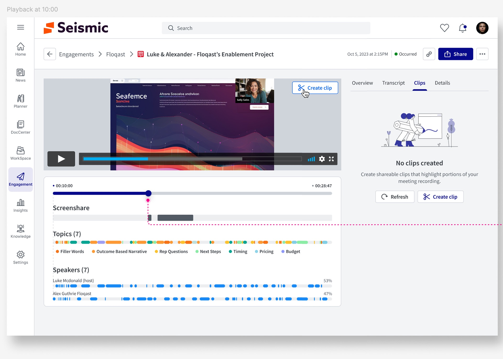
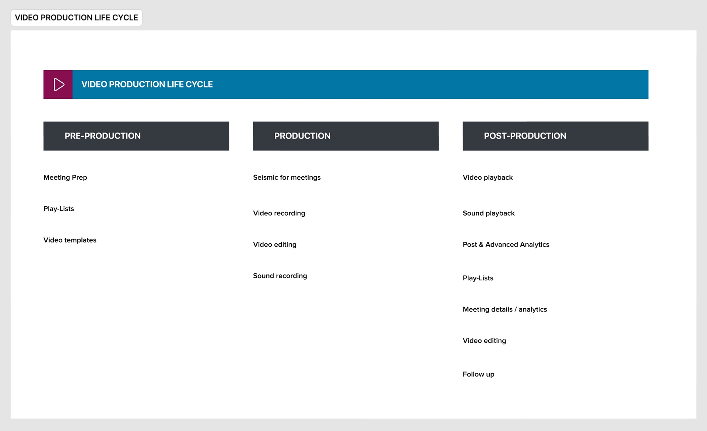
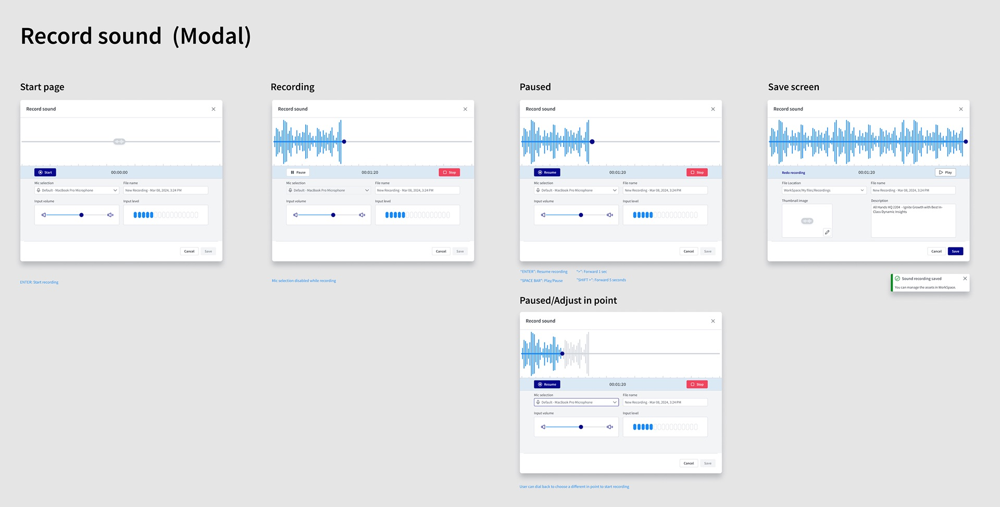
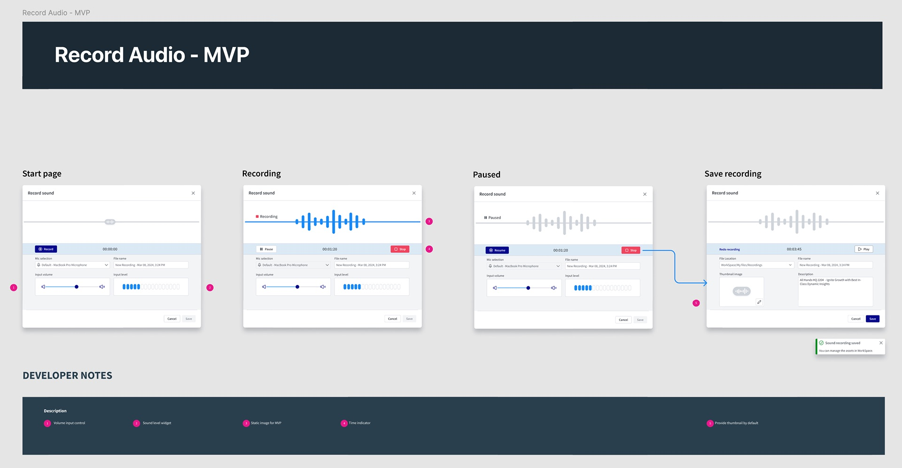
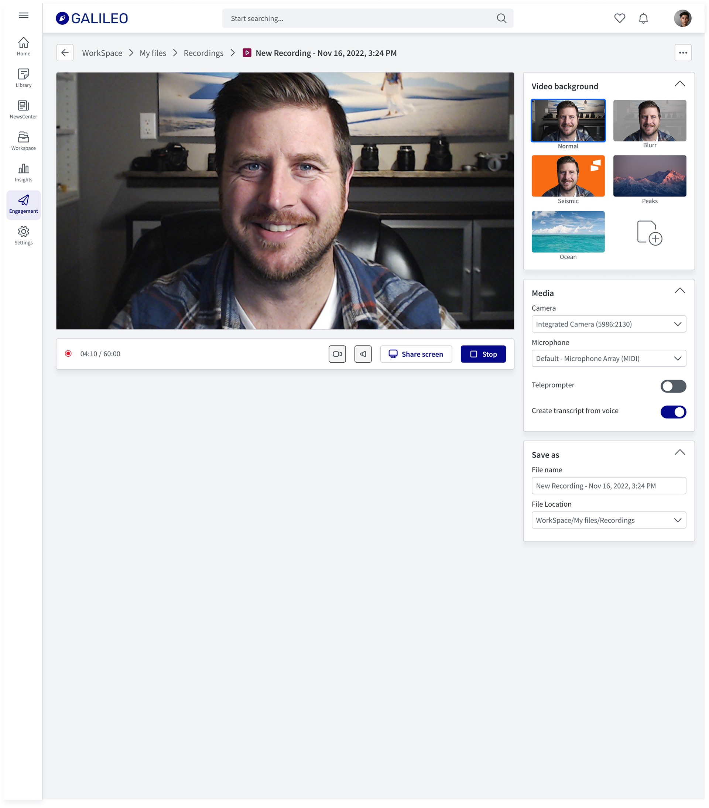
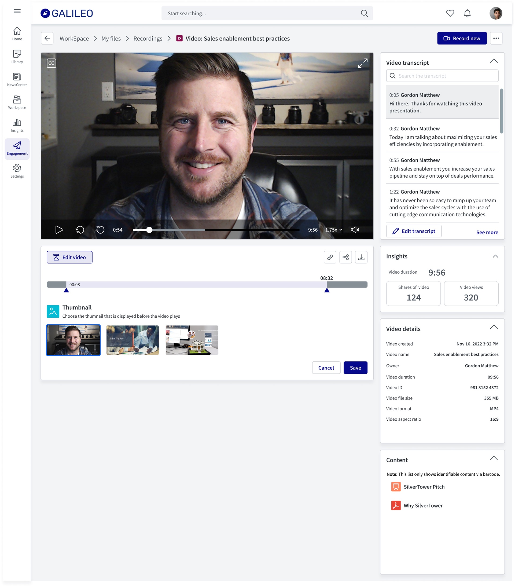
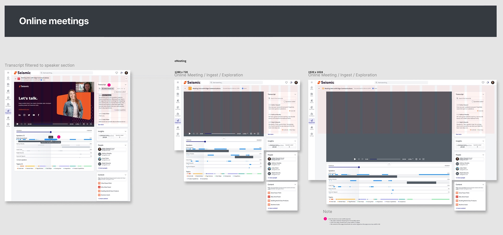
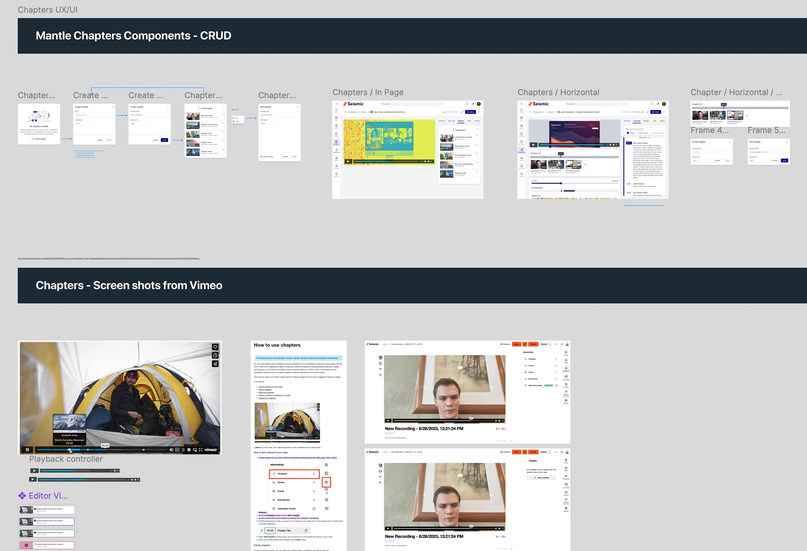
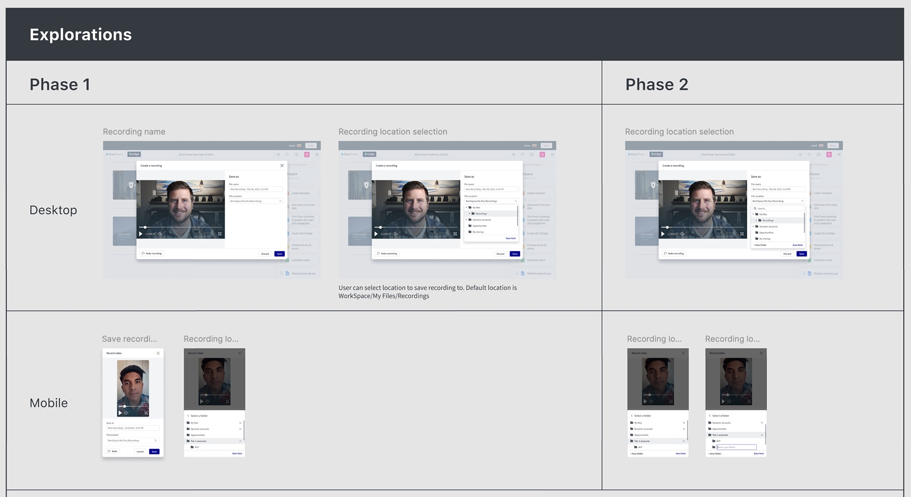

Seismic · 2022–2024
Video Foundation Service
Video in Seismic had grown up piecemeal, one app at a time. I led the design of the shared foundation underneath it all, so recording, playback, clips, chapters and audio work the same way wherever someone meets them, and users get the video experience YouTube and Zoom had already taught them to expect.
Client
Seismic
Year
Nov 2022 – Mar 2024 · phased
Role
Lead Product Designer, Video Foundation
Team
Product, platform engineering & app teams across Seismic
Platform
Web & mobile · WorkSpace, Engagement, Universal Player
Focus
Rich Media · Platform · Design System

In one line
Seismic customers wanted to record, watch, trim and share video inside the tool they already sell from. The product had pieces of that scattered across apps. I designed the Video Foundation, one service plus a set of Mantle components for recording, upload, playback, clips, chapters and audio, and shipped it in phases, starting with the experiences customers asked for most.
Context and the problem
Seismic is a sales enablement platform. Marketers publish content, sellers use it with buyers, and managers coach and measure. Video now sits at every step: product demos, recorded pitches, coaching feedback, customer meetings.
The video experience didn't hold up. Playback, recording, upload and file management had each been built separately, at different times, on different assumptions. A transcript in one place didn't exist in another, and a thumbnail set in WorkSpace didn't follow the video into a meeting.
Meanwhile the bar had moved. YouTube and Netflix set what people expect from playback. Remote work had turned sellers into everyday producers, and Zoom, Chorus and Gong had taught them to expect recording, transcripts and highlights by default. Customers were asking for a modern video capability as a core part of their post-pandemic toolkit, not an add-on.
Fragmentation is a design problem before it is an engineering one. Users don't experience your architecture; they experience its seams.
The constraints:
- Legacy surfaces still in use. The Universal Player (UP) and the User Generated Video Recorder (UGVR) were already embedded across the product. We had to improve them in place, not replace them overnight.
- A third-party video platform underneath. Encoding, transcripts and captions would come from an outside provider. The design had to work within what that provider could return, and when.
- Many owning teams. WorkSpace, Engagement, Learning and mobile each owned a surface where video appears. The foundation only mattered if every one of them could adopt it.
- One design system. Everything had to become a Mantle component that other teams could pick up, not a one-off screen.
My role and what I owned
I was the lead product designer on the Video Foundation from the lifecycle mapping through the audio MVP.
- I owned the end-to-end video experience: the lifecycle model, the record and upload flows, the recorder and playback pages, the clip and chapter patterns, the audio recorder, and the Mantle component specs that app teams built from.
- I partnered with product management on use cases, phasing and must-have calls, and with app teams (WorkSpace, Engagement, mobile) on how each surface would adopt the components.
- Platform engineering owned the Video Foundation Service itself, the integration with the third-party video provider, and the pipeline for transcripts, captions, thumbnails and GIFs.
Early record and playback work was designed in Galileo, a demo tenant, which is why its branding differs from the later Seismic screens. People, names and figures shown are demo data.
Goals, and how we'd know
Because this was a foundation and not a single feature, success had two sides: the experience users saw, and how easily teams could build on it.
- One way to do each video task. Recording, uploading, playing and sharing should behave the same in every app. Measured by how many surfaces moved onto the shared components.
- Recording that finishes. A seller who starts a recording should get to a saved, findable video. Measured by recordings started against recordings saved.
- Video you can scan, not just watch. Transcripts, chapters and clips should let someone find the two minutes that matter in a thirty-minute meeting. Measured by transcript search, clip creation and shares.
- Faster to build the next thing. Each new video feature should cost less than the last. Measured by how quickly an app team could adopt a component.
Research, and the three things that changed direction
I started by mapping where video already appeared in Seismic and where customers wanted it, then reviewed the tools our users were comparing us to. Three findings shaped the design.
1. Video isn't a feature. It's a lifecycle.

Laid out this way, the problem wasn't four missing features. It was a set of capabilities every stage needed, so they had to be built once and shared.
2. Must-haves differ by who is holding the camera
Record and upload looked like one feature. The job stories showed two. A learner needs to record or upload a quick response to a coaching prompt, then get back to work. A content creator needs to produce something other people will watch, which means choosing a location, a thumbnail, a background and a description. Both were must-haves, but not in the same release.
3. Users already knew how video should work
People came in with Zoom, Loom and Vimeo habits: blur my background, show me the transcript, let me jump to a chapter, give me a link to just this part. When we built something they already knew from another tool differently, it read as broken, not new. So I benchmarked the patterns they already had, and treated departures from them as costs that needed a reason.
Strategy and the decisions that mattered
Decision 1: Design components, not pages
The first option on the table was to redesign the worst video page and let others follow. I pushed for a different unit of work: every capability becomes a Mantle component with a defined API, backed by the Video Foundation Service, and each app composes its own page from them. It was slower to show a first result, but it was the only approach where improving the transcript once improved it everywhere.
Decision 2: Phase by persona, not by feature

Instead of shipping recording first and upload second, we shipped the smallest version of both that a learner needed, then layered on creator capabilities. That got a complete loop into customers' hands sooner and kept the two flows from diverging.
Decision 3: One anatomy for every video page
Whether it's a recording in WorkSpace or a customer meeting in Engagement, a video page has the same bones: the player on the left, a tool area under it (edit, clip, timeline), and a right rail of collapsible panels such as transcript, insights, details and related content. Users learn it once. App teams choose which panels to show; they don't redesign the page.
Decision 4: Cut the audio recorder back to what we could ship well
My first audio design was ambitious: a live waveform you could scrub back through and restart recording from any point, with keyboard shortcuts for fine adjustment. Engineering was right that the live waveform and in-point editing meant a real-time audio pipeline we didn't have yet. We agreed on an MVP that kept the full flow, start, record, pause, save, and swapped the live waveform for a static image. The full design stayed in the backlog as the target.


Design process and solution
Recording
The recorder is where the Zoom comparison is hardest to avoid, so it borrows the most from what people already know.

Playback

Meetings: the same pieces, a harder job
Recorded customer meetings put the foundation under strain: long videos, several speakers, and a user who wants one moment, not the whole hour.


Chapters

Validation and iteration
We thought a sensible default location was enough. It wasn't.
We thought saving every recording to WorkSpace / My Files / Recordings by default, with a folder tree to change it, would cover most people. We learned that content creators organise by account and opportunity, often in deep folder structures, and the tree made them scroll and expand their way to a folder that sometimes didn't exist yet. So we did two things in Phase 2: added search at the top of the location picker, and a New folder action inside it, on desktop and mobile.

Clips had to start from the moment, not a form
Early clip concepts opened a blank form asking for start and end times. People didn't know the timestamps; they knew the moment they'd just watched. Starting the clip at the playhead and showing the transcript alongside turned the task from typing numbers into confirming what you'd just heard.
The rail needed a speaker filter, not just search
Transcript search works when you know the word. In meetings, people more often knew who said it. Tying the speaker timeline to the transcript, so a click on a speaker's segment filters to their lines, came directly from watching people hunt through long meeting recordings.
Outcome and impact
Usage metrics for the Video Foundation are internal, so the evidence here is structural: what now exists that didn't before, and how it changed the next piece of work.
- One video anatomy across apps. Recording, playback and meetings share a player, a timeline and a right rail, so a user who learns one knows the others.
- Components, not copies. Camera, recorder, location picker, clips and chapters were specified as Mantle components with full CRUD states, ready for any team to adopt instead of rebuilding.
- Searchable by default. Transcripts are created at record time and sit first in the rail, which made clips, speaker filtering and chapters possible to build on top.
- A path, not just a release. The phased plan and the full audio design gave engineering a clear target past each MVP, so scope cuts were deferrals, not dead ends.
The foundation also carried into later work: the meeting timeline, transcript and clip patterns here are what Seismic Online Meetings built on.
What I'd do differently
- Put adoption on a scoreboard from day one. A foundation only succeeds if teams build on it. I tracked that in conversations when it should have been a visible list of surfaces and which components each had adopted.
- Prototype with the real provider sooner. Some designs assumed transcripts and thumbnails would be ready the moment recording stopped. Testing against the third-party platform's actual processing times earlier would have put processing and partial states into the first specs, not later ones.
- Scope the audio MVP before designing the full version. The full recorder was the right target, but designing it first made the MVP feel like a loss. Starting from the smallest version that works, then designing the path up, makes the same conversation easier.
The broader lesson: on platform work the design isn't the page, it's the agreement. The lifecycle map, the shared anatomy and the component specs mattered because they gave several teams the same answer to how does video work here. The screens follow from that.